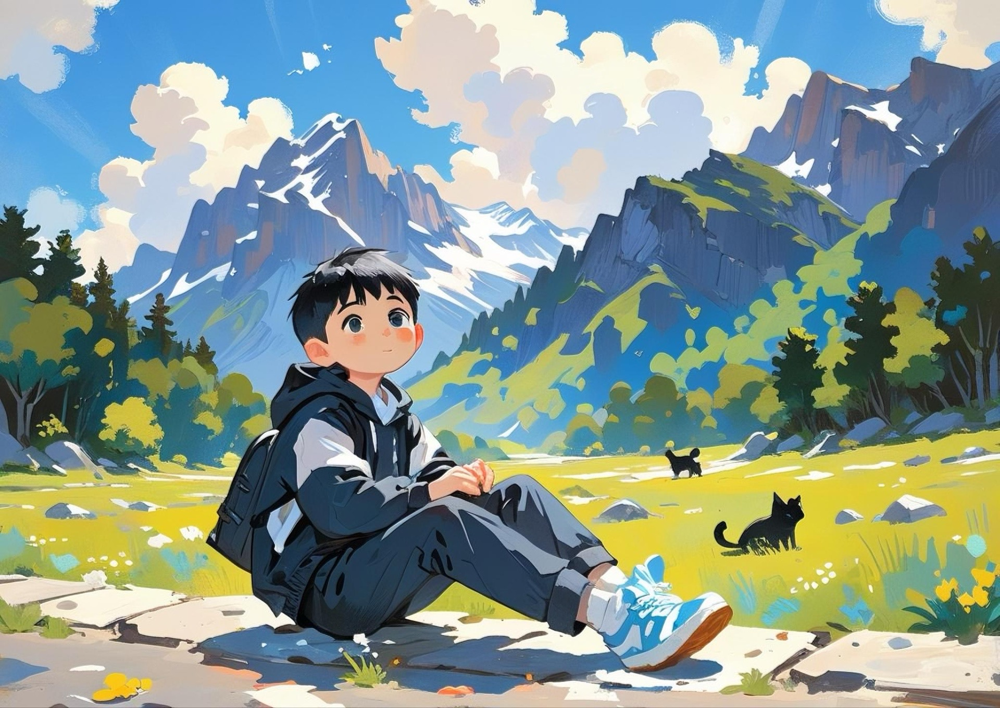

关于我

姓名：方博涵
性别：男
QQ： 2890301169
爱好：乒乓球,书法,游戏,旅行
性格：ISTP（探险家型人格）
家乡：湖北省武汉市
专业：计算机科学与技术
更多信息
我喜欢挑战和尝试新事物，无论是在学习编程还是其他兴趣爱好上，我都愿意投入时间去探索。
在编程领域，我目前学习了 C 语言、Python 和 HTML/CSS，未来想要学习更多前沿技术。
目标：希望在未来成为一名优秀的IT从业者，开发有趣且有价值的产品。
旅行经历：曾去过川西、广西、北京、湖南、江苏等地。
偶像：我的偶像是马龙，他是世界级的乒乓球选手。除了在赛场上表现出色，马龙还是我学习与生活中的榜样，他的坚持、毅力和自律深深影响了我。